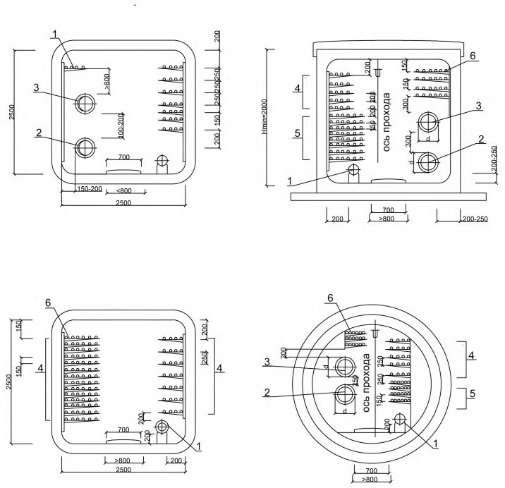

СП 265.1325800.2016 «Коллекторы коммуникационные. Правила проектирования и строи»
О документе: разработчики, утверждение, регистрация, ключевые слова
СВОД ПРАВИЛ
СП 265.1325800.2016
Издание официальное
Москва 2016
1 ИСПОЛНИТЕЛИ - Акционерное общество «Институт по изысканиям и проектированию инженерных сооружений» (АО «Инжпроектсервис»), Государственное унитарное предприятие «Москоллектор» (ГУП «Москоллектор»), Общество с ограниченной ответственностью «ВНИПИЭНЕРГОПРОМ-инжиниринг» (ООО «ВЭП-инжиниринг»), Открытое акционерное общество «Московская объединенная энергетическая компания» (ОАО «МОЭК»), Акционерное общество «МОЭК-проект» (АО «МОЭК-проект»), Общество с ограниченной ответственностью «Институт Каналстройпроект» (ООО «Институт Каналстройпроект»), Общество с ограниченной ответственностью «ЭкоПрог» (ООО «Экопрог»), Государственное унитарное предприятие г. Москвы «Научно-исследовательский институт московского строительства» (ГУП «НИИМосстрой»)
2 ВНЕСЕН Техническим комитетом по стандартизации ТК 465 «Строительство»
- 3 ПОДГОТОВЛЕН К УТВЕРЖДЕНИЮ Департаментом градостроительной деятельности и архитектуры Министерства строительства и жилищно-коммунального хозяйства Российской Федерации (Минстрой России)
- 4 УТВЕРЖДЕН Приказом Министерства строительства и жилищно-коммунального хозяйства Российской Федерации от \_\_\_ декабря 20\_\_ г. № \_\_\_\_/пр и введен в действие \_\_\_ января 20\_\_\_ г.
5 ЗАРЕГИСТРИРОВАН Федеральным агентством по техническому регулированию и метрологии (Росстандарт)
6 ВВЕДЕН ВПЕРВЫЕ
В случае пересмотра (замены) или отмены настоящего свода правил соответствующее уведомление будет опубликовано в установленном порядке. Соответствующая информация, уведомление и тексты размещаются также в информационной системе общего пользования - на официальном сайте разработчика (Минстрой России) в сети Интернет
© Минстрой России, 2016
Настоящий нормативный документ не может быть полностью или частично воспроизведен, тиражирован и распространен в качестве официального издания на территории Российской Федерации без разрешения Минстроя России
Дата введения - ……………
УДК 624.19 ОКС 93.060
Ключевые слова: коллекторы коммуникационные, коллекторы для инженерных сетей, тоннели, проектирование, строительство
| Руководитель организации-разработчика АО «Инжпроектсервис» наименование организации | ||
|---|---|---|
| Генеральный директор Должность | ____________________ | В.В. Кутепов инициалы, фамилия |
| личная подпись | ||
| Руководитель разработки | ___________________ | И.Б. Новиков |
| __________________ должность | личная подпись | инициалы, фамилия |
| Исполнитель | ___________________ | М.А. Степанов |
| __________________ должность | личная подпись | инициалы, фамилия |
| Исполнитель | ___________________ | А. В. Тихомиров |
| __________________ должность | личная подпись | инициалы, фамилия |
| Исполнитель | ___________________ | С.В. Барышев |
| __________________ должность | личная подпись | инициалы, фамилия |
| Е.В.Фомичева | ||
| Исполнитель __________________ должность | ___________________ личная подпись | инициалы, фамилия |
| СОИСПОЛНИТЕЛИ Руководитель организации- | ____________________ | И.Б.Новиков |
| соисполнителя | личная подпись | инициалы, фамилия |
| ООО «ВЭП-инжиниринг» наименование организации | Е.В. Кружечкина инициалы, фамилия |
Введение
Настоящий свод правил разработан в соответствии с Федеральным законом от 30 декабря 2009 г. № 384-ФЗ «Технический регламент о безопасности зданий и сооружений» [3] и Федеральным законом от 22 июля 2008 г. № 123-ФЗ «Технический регламент о требованиях пожарной безопасности» [5].
Настоящий свод правил разработан следующими организациями: АО «Инжпроектсервис» ( И.Б. Новиков (руководитель работы), М.А. Степанов , В.С. Молоткова , А.В. Тихомиров , С.В. Барышев , Е.В. Фомичева ); ГУП «Москоллектор» ( В.А. Глухоедов , А.Ю. Калядин , Т.Н. Гордюшина , канд. техн. наук М.Е. Климовский ); ООО «ВЭП-инжиниринг» ( Е.В. Савушкина ); ОАО «МОЭК» ( Р.В. Агапов ); АО «МОЭК-проект» ( А.И. Лейтман ); ООО «Институт Каналстройпроект» ( А.И. Бобров ); ООО «ЭкоПрог» ( М.Б. Ступеньков , А.И. Иванов , И.В. Рощупкин ). Также были использованы материалы авторского коллектива АО «Мосинжпроект» (канд. техн. наук А.С. Чирко , Л.Н. Насыбулина , А.А. Пашенцев , В.Н. Киселев , В.Я. Зарецкий , Ю.Д. Гуреева , Г.В. Соловьева , А.В. Нагорнова , Ю.В. Кишинский , В.Н. Максимова , А.И. Плеханова , И.Н. Ильина , А.Н. Ковтуненко , Н.В. Митусов , В.Н. Степанов , докт. техн. наук В.Е. Меркин , Д.Д. Павлова ) и ГУП «НИИМосстрой».
| [1] | Постановление Правительства Российской Федерации от 19 января 2006 | Постановление Правительства Российской Федерации от 19 января 2006 |
|---|---|---|
| [2] | Постановление Правительства Российской Федерации от 16 февраля 2008 г. №87 «О составе разделов проектной документации и требованиях к их содержанию» | Постановление Правительства Российской Федерации от 16 февраля 2008 г. №87 «О составе разделов проектной документации и требованиях к их содержанию» |
| [3] | Федеральный закон от 30 декабря 2009 г. №384-ФЗ «Технический регламент о безопасности зданий и сооружений» | Федеральный закон от 30 декабря 2009 г. №384-ФЗ «Технический регламент о безопасности зданий и сооружений» |
| [4] | ПУЭ | Правила устройства электроустановок (6-е и 7-е изд.) |
| [5] | Федеральный закон от 22 июля 2008 г. №123-ФЗ «Технический регламент о требованиях пожарной безопасности» | Федеральный закон от 22 июля 2008 г. №123-ФЗ «Технический регламент о требованиях пожарной безопасности» |
| [6] | ПТЭЭП | Правила технической эксплуатации электроустановок потребителей |
| [7] | ПТБЭЭП | Правила техники безопасности при эксплуатации электроустановок потребителей (4-е изд.) |
| [8] | РД 05-325-99 | Нормы безопасности на основное горно- транспортное оборудование для угольных шахт |
| [9] | ВСН 127-91 | Нормы по проектированию и производству работ по искусственному понижению уровня подземных вод при сооружении тоннелей и метрополитенов |
| [10] | СН 322-74 | Указания по производству и приемке работ по строительству в городах и на промышленных предприятиях коллекторных тоннелей, сооружа- емых способом щитовой проходки |
| [11] | СНиП 12-03-2001 | Безопасность труда в строительстве. Часть 1. Общие требования |
| [12] | СП 23-101-2004 | Проектирование тепловой защиты зданий |
1Область применения
2Нормативные ссылки
В настоящем своде правил использованы нормативные ссылки на следующие документы:
ГОСТ 2.601-2013 Единая система конструкторской документации. Эксплуатационные документы
ГОСТ 12.1.004-91 Система стандартов безопасности труда. Пожарная безопасность. Общие требования
ГОСТ 12.1.030-81 Система стандартов безопасности труда. Электробезопасность. Защитное заземление, зануление
ГОСТ 5781-82 Сталь горячекатаная для армирования железобетонных конструкций. Технические условия
ГОСТ 10060-2012 Бетоны. Методы определения морозостойкости
ГОСТ 12730.5-84 Бетоны. Методы определения водонепроницаемости
ГОСТ 23118-2012 Конструкции стальные строительные. Общие технические условия
ГОСТ 26342-84 Средства охранной, пожарной и охранно-пожарной сигнализации. Типы, основные параметры и размеры
ГОСТ 26633-2012 Бетоны тяжелые и мелкозернистые. Технические условия
\_\_\_\_\_\_\_\_\_\_\_\_\_\_\_\_\_\_\_\_\_\_\_\_\_\_\_\_\_\_\_\_\_\_\_\_\_\_\_\_\_\_\_\_\_\_\_\_\_\_\_\_\_\_\_\_\_\_\_\_\_\_\_\_\_\_\_\_\_\_\_\_
Manifold for engineering networks
- ГОСТ 30852.0-2002 (МЭК 60079-0:1998) Электрооборудование взрывозащищенное. Часть 0. Общие требования
ГОСТ 31565-2012 Кабельные изделия. Требования пожарной безопасности
- ГОСТ Р 52748-2007 Дороги автомобильные общего пользования. Нормативные нагрузки, расчетные схемы нагружения и габариты приближения
ГОСТ Р 53325-2012 Техника пожарная
- СП 1.13130.2009 Системы противопожарной защиты. Эвакуационные пути и выходы (с изменением № 1)
- СП 3.13130.2009 Системы противопожарной защиты. Система оповещения и управления эвакуацией людей при пожарах. Требования пожарной безопасности
- СП 5.13130.2009 Системы противопожарной защиты. Установки пожарной сигнализации и пожаротушения автоматические. Нормы и правила проектирования (с изменением № 1)
- СП 14.13330.2014 «СНиП II-7-81* Строительство в сейсмических районах» (с изменением № 1)
СП 15.13330.2012 «СНиП II-22-81* Каменные и армокаменные конструкции»
- СП 18.13330.2011 «СНиП II-89-80* Генеральные планы промышленных предприятий»
СП 20.13330.2011 «СНиП 2.01.07-85* Нагрузки и воздействия»
- СП 25.13330.2012 «СНиП 2.02.04-88 Основания и фундаменты на вечномерзлых грунтах»
- СП 28.13330.2012 «СНиП 2.03.11-85 Защита строительных конструкций от коррозии» (с изменением № 1)
- СП 30.13330.2012 «СНиП 2.04.01-85* Внутренний водопровод и канализация зданий»
- СП 31.13330.2012 «СНиП 2.04.02-84* Водоснабжение. Наружные сети и сооружения» (с изменениями № 1, № 2)
- СП 32.13330.2012 «СНиП 2.04.03-85 Канализация. Наружные сети и сооружения» (с изменением № 1)
- СП 42.13330.2011 «СНиП 2.07.01-89* Градостроительство. Планировка и застройка городских и сельских поселений»
СП 43.13330.2012 «СНиП 2.09.03-85 Сооружения промышленных предприятий»
- СП 45.13330.2012 «СНиП 3.02.01-87 Земляные сооружения, основания и фундаменты»
СП 47.13330.2012 «СНиП 11-02-96 Инженерные изыскания для строительства. Основные положения»
СП 52.13330.2011«СНиП 23-05-95* Естественное и искусственное освещение»
СП 60.13330.2012 «СНиП 41-01-2003 Отопление, вентиляция и кондиционирование воздуха»
СП 61.13330.2012 «СНиП 41-03-2003 Тепловая изоляция оборудования и трубопроводов»
СП 63.13330.2012 «СНиП 52-01-2003 Бетонные и железобетонные конструкции. Основные положения» (с изменениями № 1, № 2)
СП 70.13330.2012 «СНиП 3.03.01-87 Несущие и ограждающие конструкции»
СП 71.13330.2011 «СНиП 3.04.01-87 Изоляционные и отделочные покрытия»
СП 72.13330.2011 «СНиП 3.04.03-85 Защита строительных конструкций и сооружений от коррозии»
СП 76.13330.2011 «СНиП 3.05.06-85 Электротехнические устройства»
СП 91.13330.2012 «СНиП II-94-80 Подземные горные выработки»
СП 103.13330.2012 «СНиП 2.06.14-85 Защита горных выработок от подземных и поверхностных вод»
СП 116.13330.2012 «СНиП 22-02-2003 Инженерная защита территорий, зданий и сооружений от опасных геологических процессов. Основные положения»
СП 124.13330.2012 «СНиП 41-02-2003 Тепловые сети»
Примечание - При пользовании настоящим сводом правил целесообразно проверить действие ссылочных документов в информационной системе общего пользования -на официальном сайте федерального органа исполнительной власти в сфере стандартизации в сети Интернет или по ежегодному информационному указателю «Национальные стандарты», который опубликован по состоянию на 1 января текущего года, и по выпускам ежемесячного информационного указателя «Национальные стандарты» за текущий год. Если заменен ссылочный документ, на который дана недатированная ссылка, то рекомендуется использовать действующую версию этого документа с учетом всех внесенных в данную версию изменений. Если заменен ссылочный документ, на который дана датированная ссылка, то рекомендуется использовать версию этого документа с указанным выше годом утверждения (принятия). Если после утверждения настоящего свода правил в ссылочный документ, на который дана датированная ссылка, внесено изменение, затрагивающее положение, на которое дана ссылка, то это положение рекомендуется применять без учета данного изменения. Если ссылочный документ отменен без замены, то положение, в котором дана ссылка на него, рекомендуется применять в части, не затрагивающей эту ссылку. Сведения о действии сводов правил целесообразно проверить в Федеральном информационном фонде технических регламентов и стандартов.
3Термины, определения и сокращения
- 3.1.1 аварийный выход
- Совокупность объемно-планировочных и технических решений, обеспечивающих оперативный выход людей из коллектора на поверхность земли в случае возникновения чрезвычайной ситуации.
- 3.1.2автоматизированное рабочее место; АРМ
- Программно-технический комплекс автоматизированной системы, предназначенный для автоматизации деятельности определенного вида.Источник: ГОСТ 34.003-90, статья 2.22
- 3.1.3 автоматическая насосная станция; АНС
- Совокупность объемнопланировочных и технических решений, обеспечивающих сбор и принудительное удаление из коллектора случайных, аварийных и дренажных вод.
- 3.1.4 вентиляционная камера
- Помещение в коллекторе, предназначенное для размещения вентиляционного оборудования.
- 3.1.5 вентиляционная шахта
- Часть коллектора - сооружение, состоящее из вентиляционного канала и вентиляционного киоска (оголовка), предназначенное для обеспечения воздухообмена между коллектором и атмосферой.
- 3.1.6 вентиляционный канал
- Часть коллектора от камеры до вентиляционного оголовка или киоска, предназначенная для подачи или удаления воздуха.
- 3.1.7 вентиляционный киоск
- Часть коллектора, отдельно расположенное или встроенное сооружение с дверью или без двери, предназначенное для забора или выброса воздуха из коллектора.
- 3.1.8 вентиляционный оголовок
- Часть коллектора, отдельно расположенное или встроенное сооружение с люком (аварийным выходом) или без него, предназначенное для забора или выброса воздуха из коллектора.
- 3.1.9 вентиляционный участок
- Часть коллектора, имеющая независимую систему вентиляции.
- 3.1.10 галерея
- Подземное полностью закрытое, горизонтальное или наклонное узкое и протяженное сооружение, соединяющее камеры или линейную часть коллектора с диспетчерским пунктом или входом в коллектор, предназначенное для прохода обслуживающего его персонала.
- 3.1.11 диспетчерский пункт; ДП
- Часть коллектора, место расположения диспетчера и оборудования, имеющего органы управления и средства отображения и выдачи информации.
- 3.1.12 закрытый способ работ
- Сооружение линейной части коллектора без вскрытия поверхности земли.
- 3.1.13 камера
- Часть коллектора, предназначенная для ввода/вывода коммуникаций, а также для размещения вентиляционной камеры, АНС, электрощитовой.
- 3.1.14 коллектор глубокого заложения
- Коллектор с глубиной заложения верха ограждающей несущей конструкции ниже глубины промерзания грунта.
- 3.1.15 коллектор мелкого заложения
- Коллектор с глубиной заложения верха ограждающей несущей конструкции выше или на глубине промерзания грунта, но не выше 0,7 м от поверхности земли.
- 3.1.16 коллекторное хозяйство
- Коллектор, здания и сооружения необходимые для эксплуатации коллекторов, внутренних инженерных систем коллекторов и инженерных сетей, прокладываемых в коллекторах. Примечание - Включает в себя насосные, ДП, павильоны, камеры, дренажные устройства и т. п.
- 3.1.17 коммуникационный коллектор
- Протяженное проходное подземное сооружение, предназначенное для совместной прокладки и обслуживания инженерных коммуникаций, с внутренними инженерными системами, обеспечивающими его функционирование.
- 3.1.18 линейная часть коллектора
- Участок коллектора между камерами, включая углы поворота.
- 3.1.19 монтажный проем
- Отверстие в перекрытии для обеспечения беспрепятственного перемещения крупногабаритного оборудования или укрупненных узлов конструкций к месту их монтажа или демонтажа.
- 3.1.20 обделка
- Ограждающая несущая конструкция коллектора.
- 3.1.21 облачные решения
- Модель обеспечения повсеместного и удобного сетевого доступа по требованию к общему пулу конфигурируемых вычислительных ресурсов (например, сетям передачи данных, серверам, устройствам хранения данных, приложениям и сервисам - как вместе, так и по отдельности), которые могут быть оперативно предоставлены и освобождены с минимальными эксплуатационными затратами и/или обращениями к провайдеру.
- 3.1.22 открытый способ работ
- Сооружение коллектора в котловане.
- 3.1.23 отсек
- Часть коллектора, выделенная противопожарными стенами и противопожарными перекрытиями или покрытиями, с пределами огнестойкости конструкции, обеспечивающими нераспространение пожара за границы пожарного отсека в течение всей продолжительности пожара.
- 3.1.24 предизолированный трубопровод
- Трубопровод, изолируемый в заводских условиях.
- 3.1.25 система горизонтального транспорта; СГТ
- Комплекс технических средств передвижения внутри коммуникационного коллектора, предназначенный для ведения осмотра коммуникаций, прокладываемых в коллекторе, и доставки персонала, материалов и оборудования к местам ремонта и повреждений, с возможностью аварийной эвакуации персонала до аварийных выходов.
- 3.1.26 эксплуатационный персонал
- Специально подготовленные лица, прошедшие проверку знаний в объеме, обязательном для данной работы и/или должности.
- 3.1.27 электрощитовая
- Помещение в коллекторе или наземное сооружение, к которому проложены электрические кабели от трансформаторной подстанции, предназначенное для размещения электрооборудования и подключения кабелей, питающих инженерное оборудование коллектора. 3.2 В настоящем стандарте применены следующие сокращения: АО -аварийное освещение;
- [АСУД - автоматизированная система управления и диспетчеризации;](http
- //www.tekon.ru/bookasud.pdf) АСПС - автоматическая система пожарной сигнализации; ВРУ - вводно-распределительное устройство; ДЦ - диспетчерский центр; ИИ - инженерные изыскания; ИПД - извещатель пожарный дымовой; ИПР - извещатель пожарный ручной; ИСБ - интегрированная система безопасности; КИП - контрольно-измерительный пункт; ОС - охранная сигнализация; ПК - персональный компьютер; ПО - программное обеспечение; ПЦН - пульт централизованного наблюдения; РО - рабочее освещение; СВ - система видеонаблюдения; СГЗ - сигнализация газовой защиты; СКУД -система контроля управления доступом; СУТЭ - система управления технической эксплуатацией; ТП - трансформаторная подстанция; УВИП - устройства ввода идентификационных признаков; УПУ - устройства преграждающие управляемые; УУ - устройства управления; ЦДП - центральный диспетчерский пункт.
4Общие положения
Перспективы прокладки дополнительных сетей и возможности увеличения диаметров или сечений действующих должны быть предусмотрены в схемах развития инженерной инфраструктуры и указаны в технических условиях потребителей услуг (владельцев или балансодержателей сетей) и задании на проектирование коммуникационных коллекторов.
Объем перспективного развития указывают в технических условиях потребителей услуг и задании на проектирование коммуникационных коллекторов.
4.6Требования к инженерным изысканиям
Дополнительные требования к результатам ИИ, выполняемых для реконструкции, технического перевооружения и капитального ремонта коллекторов, сетей их инженерного обеспечения и инженерных сетей, проложенных в коллекторах, проводимых внутри коллектора без вскрытия строительных конструкций и проведения земляных работ, определяются техническим заданием заказчика (застройщика) в зависимости от вида, технической сложности и конструктивных особенностей работ по реконструкции, техническому перевооружению и капитальному ремонту.
При аварийном ремонте коллекторов и сетей инженерного обеспечения коллекторов ИИ не требуются.
5Трассы и способы прокладки коллекторов
5.2Размещение коллекторов в плане
При проектировании внутриквартальных коллекторов не допускается их трассировка через территорию детского сада и школы. Коллекторы с собственными инженерными сетями детского сада и школы следует проектировать по кратчайшим расстояниям от подводящих инженерных сетей до здания, исключая прохождение под игровыми и спортивными площадками (рекомендуется прокладка со стороны хозяйственной зоны). Не допускается устройство смотровых колодцев на территориях площадок, проездов, проходов. Места их размещения на других территориях должны быть огорожены или выделены предупреждающими об опасности знаками.
В местах пересечения коллектора с линиями метрополитена или железных дорог трассу коллектора следует проектировать прямолинейными участками без углов поворота. Прокладка коллекторов с проложенными в нем тепловыми сетями над станционными сооружениями метрополитена не допускается.
Пересечение коллекторами трамвайных путей следует предусматривать на расстоянии от стрелок и крестовин не менее 4 м (в свету).
10 - до стрелок и крестовин железнодорожного пути и мест присоединения отсасывающих кабелей к рельсам электрифицированных железных дорог;
20 - до стрелок и крестовин железнодорожного пути при просадочных грунтах;
30 - до мостов и других искусственных сооружений.
В стесненных условиях, при отсутствии возможности устройства камеры, следует предусматривать техническое решение, обеспечивающее возможность обслуживания, осмотра и ремонта размещенного там оборудования и инженерных сетей, а также возможность прохода персонала.
В охранной зоне коллектора запрещается проведение любых строительномонтажных работ без согласования с эксплуатирующей организацией.
5.3Размещение коллекторов в профиле
Дополнительно при проектировании и выборе глубины заложения коллектора следует учитывать:
- глубину заложения коммуникаций и других сооружений, пересекаемых коллектором;
- температурный режим внутри коллектора;
- несущую способность строительных конструкций коллектора.
Минимальное расстояние от стенки футляра до коммуникаций и кабелей, проложенных в коллекторе, должно быть в свету не менее 0,15 м.
5.4Размещение коллекторов в населенных пунктах
- вентиляционных оголовков;
- вентиляционных киосков;
- ДП;
- электрощитовых;
- входов и выходов в подземную часть коллектора;
- смотровых и монтажных люков;
- аварийных и эвакуационных выходов.
Уменьшение расстояния между приточным и вытяжным оголовком (киоском) допускается при соответствующем обосновании в стесненных условиях и устройстве вентиляционных оголовков (киосков), обеспечивающем исключение перетока воздуха из вытяжного оголовка в приточный.
Расстояние от вентиляционного оголовка или вентиляционного киоска до хранилищ нефти и газа, складов лесоматериалов и других пожароопасных и взрывоопасных объектов должно быть не менее 50 м.
Расстояние от подземных емкостей раздаточных колонок автомобильных заправочных станций до коллектора должно быть не менее 10 м, а до вентиляционного оголовка или вентиляционного киоска не менее 20 м.
6Конструкция коллекторов
6.1Общие требования
6.2Размещение инженерных сетей в коллекторах
6.2.1 Общие положения
6.2.1.1 Коллекторы предназначены для прокладки следующих сетей инженерного обеспечения: тепловых водяных и паровых сетей, водопроводных сетей, силовых электрических кабельных линий, кабелей связи и контрольных кабелей, трубопроводов сжатого воздуха давлением до 1,6 МПа, холодопроводов и трубопроводов напорной канализации.
Напорные канализационные сети и холодопроводы допускается прокладывать в коллекторах при наличии технико-экономического обоснования и технических условий на прокладку таких коммуникаций в коммуникационных коллекторах.
6.2.1.2 Тепловые водяные сети, сети водопровода, электрические кабельные линии до 35 кВ, кабели связи и трубопроводы сжатого воздуха с рабочим давлением не более 1,6 МПа прокладывают в коммуникационных коллекторах в любом сочетании.
6.2.1.3 Совместная прокладка в коммуникационном коллекторе силовых кабельных линий с паропроводами не допускается.
6.2.1.4 Прокладку паровых тепловых сетей или паропроводов следует предусматривать в сечении, отдельном от основного сечения коллектора, соединенным с основным.
Расстояния между местами соединений сечений коллектора не должны превышать 140 м.
6.2.1.5 Инженерные коммуникации в коммуникационном коллекторе следует располагать с одной или двух сторон от прохода.
Ширина прохода в свету между крайними трубопроводами или кабельными линиями должна быть равна наружному диаметру наибольшего трубопровода, в том числе и предизолированного, проложенного в коллекторе, плюс 0,1 м, но не менее 0,9 м.
Ширина прохода при двустороннем размещении силовых кабельных линий должна быть не менее 1,0 м.
Уменьшение ширины прохода до 0,5 м на протяжении не более 1,5 м возможно при обосновании и согласовании с организацией, эксплуатирующей коллектор.
Высота прохода в линейной части коллектора должна быть не менее 1,8 м. Как исключение, при пересечении коммуникаций, не подлежащих перекладке, или при наличии естественных преград допускается уменьшение высоты прохода до 1,6 м на протяжении не более 2 м.
6.2.1.6 Минимальные расстояния между строительными конструкциями и трубопроводами и соседними коммуникациями следует принимать в соответствии с [4] и приложением Б.
6.2.1.7 Ширину прохода в коммуникационном коллекторе при использовании горизонтальной системы транспорта следует выбирать в соответствии с требованиями раздела 9.
6.2.1.8 Примеры сечений коммуникационных коллекторов приведены на рисунке Г.1 приложения Г.
6.2.2 Тепловые сети
6.2.2.1 Тепловые сети в коллекторах следует проектировать в соответствии с положениями настоящего пункта с учетом требований СП 124.13330.
6.2.2.2 Трубопроводы тепловой сети следует располагать друг над другом в два яруса, при этом подающий трубопровод прокладывают в нижнем ярусе.
При обосновании допускается расположение трубопроводов тепловой сети в одном ярусе, при этом должна быть обеспечена возможность осмотра, диагностики и ремонта трубопроводов.
Трубопроводы тепловой сети прокладывают на одной стороне коллектора с кабелями связи и кабелями собственных нужд.
6.2.2.3 Опорные конструкции трубопроводов тепловой сети следует предусматривать железобетонными или металлическими. Опорные конструкции должны быть конструктивно связаны со строительными конструкциями коллектора.
Применяемые опоры должны быть диэлектрическими.
6.2.2.4 Минимальные расстояния от трубопроводов тепловой сети до строительных конструкций и смежных коммуникаций следует принимать по приложению Б с учетом требований СП 124.13330. Уменьшение расстояний от трубопроводов тепловой сети до строительных конструкций и смежных коммуникаций допускается в случае проведения реконструкции тепловых сетей в действующих коллекторах с учетом обеспечения требований 6.1.1 и регламентируется [2, раздел I, пункт 5].
6.2.2.5 При разработке проектной документации на капитальный ремонт и реконструкцию тепловых сетей с использованием ранее возведенных строительных конструкций коллектора и опор тепловой сети следует проводить предпроектное обследование таких конструкций в целях определения возможности их использования на весь срок службы ремонтируемой (реконструируемой) сети.
При изменении диаметра трубопроводов тепловой сети следует проводить поверочный расчет неподвижных опор с учетом изменения нагрузки.
6.2.2.6 Трубопроводы тепловой сети, прокладываемые в коллекторе, должны иметь тепловую изоляцию. Тип и толщину изоляции следует выбирать с учетом требований СП 61.13330, СП 124.13330 и раздела 13.
6.2.2.7 Узлы управления, ответвления и другое оборудование, устанавливаемое на тепловых сетях, проложенных в коллекторе, следует размещать в камерах. Габариты камер следует проектировать во взаимной увязке с другими коммуникациями, проложенными в коллекторе, и в соответствии с приложением Б и требованиями СП 124.13330.
Камеры следует проектировать пристроенными к коллектору с устройством перегородок пределом огнестойкости не менее EI 15 по [5].
6.2.2.8 Трубопроводы тепловых сетей, прокладываемые в коллекторе, должны быть защищены от коррозии. Мероприятия по защите трубопроводов должны удовлетворять требованиям раздела 13 СП 124.13330.2012.
6.2.2.9 П-образные компенсаторы тепловых сетей следует размещать в нишах за пределами линейной части коллектора, а при невозможности устройства ниш - размещать П-образные компенсаторы внутри строительных габаритов линейной части коллектора, при этом поперечно проложенные трубопроводы тепловой сети должны быть оборудованы переходными мостиками в соответствии с требованиями 11.2.
6.2.2.10 Каналы тепловых сетей, примыкающие к коллекторам, следует проектировать с уклоном от коллектора.
6.2.3 Сети водопровода
6.2.3.1 Водопроводные сети в коллекторах следует проектировать в соответствии с положениями настоящего пункта с учетом требований СП 31.13330.
6.2.3.2 Трубопроводы водопроводной сети следует прокладывать с одной стороны от прохода совместно с кабелями связи и силовыми кабельными линиями.
Прокладка водопроводных сетей над трубопроводами тепловой сети не допускается.
6.2.3.3 Трубопроводы, прокладываемые в коллекторе, следует располагать на бетонных, железобетонных или металлических опорных конструкциях. Необходимость наличия конструктивной связи между опорными конструкциями и строительными конструкциями коллектора определяют расчетом.
Опоры должны быть из диэлектрического материала.
6.2.3.4 Материал трубопроводов водопроводной сети следует выбирать в соответствии с заданием на проектирование, техническими условиями эксплуатирующей организации и с учетом требований СП 31.13330.
6.2.3.5 Минимальные расстояния от трубопроводов водопроводной сети до строительных конструкций и смежных коммуникаций следует принимать по приложению Б с учетом требований СП 31.13330. Уменьшение расстояний допускается в случае проведения реконструкции трубопроводов в действующих коллекторах с учетом обеспечения требований 6.1.1.
6.2.3.6 Узлы управления, ответвления, гидранты и другое оборудование, устанавливаемое на сетях водопровода, проложенных в коллекторе, следует размещать в камерах за пределами коллектора. Габариты камер следует проектировать во взаимной увязке с другими коммуникациями, проложенными в коллекторе, и в соответствии с приложением Б и требованиями СП 31.13330.
Трубопроводы водопровода и пола камер следует проектировать с уклоном от коллектора.
В местах прохода трубопроводов через стенку коллектора должны быть предусмотрены гильзы с манжетами стенового ввода или другие устройства, обеспечивающие гидро- и газогерметизацию узла ввода.
6.2.3.7 В зависимости от температурного режима в коллекторе водопроводные сети следует теплоизолировать.
Теплоизоляции подлежат водопроводные сети на 15-метровом участке трубопровода до и после вентиляционного канала. Дополнительно трубопроводы водопровода следует изолировать при больших тепловыделениях в коллекторе и возможности нагрева водопроводной воды до 20 о С. Необходимость применения изоляции, ее тип и конструкцию определяют в соответствии с требованиями СП 61.13330 и СП 31.13330, раздела 13, а также норм пожарной безопасности.
6.2.3.8 Трубопроводы водопроводных сетей, прокладываемых в коллекторе, должны быть стальными защищенными от коррозии или выполняться из негорючего коррозионностойкого материала.
Изоляцию водопроводных сетей следует выполнять в соответствии с требованиями раздела 10.
6.2.4 Силовые электрические кабельные линии
6.2.4.1 Проектирование и прокладку электрических кабельных линий в коллекторах следует вести в соответствии с правилами [4], [6], [7] и требованиями настоящего пункта.
В коллекторах кабельные линии рекомендуется прокладывать целыми строительными длинами, а размещение кабельных линий следует проводить в соответствии с изложенными ниже требованиями.
Силовые кабельные линии следует размещать только над или только под контрольными кабелями. В местах пересечения и ответвления допускается прокладка контрольных кабелей и кабелей связи над и под силовыми кабельными линиями.
Силовые кабельные линии с контрольными кабелями и кабелями связи разделяются горизонтальной перегородкой с пределом горючести EI 15 по [5].
Допускается прокладка контрольных кабелей рядом с силовыми кабельными линиями напряжением до 1 кВ.
Силовые кабельные линии напряжением до 1 кВ рекомендуется прокладывать над кабельными линиями выше 1 кВ; при этом их следует отделять противопожарной перегородкой с пределом горючести EI 15 по [5].
Различные группы кабельных линий: рабочие и резервные кабельные линии выше 1 кВ от генераторов, трансформаторов и т. п., питающие электроприемники категории I, следует прокладывать на разных горизонтальных уровнях и разделять противопожарными перегородками.
6.2.4.2 Силовые кабельные линии прокладывают в коллекторах по металлическим конструкциям.
Кабельные металлоконструкции следует устанавливать в соответствии с проектной (расчетной) пропускной способностью коллектора на этапе строительства до ввода в эксплуатацию.
Кабельные металлические конструкции монтируют из направляющего кронштейна (стойка, кабель-рост) и консоли (полки). Направляющие кронштейны кабельных металлоконструкций крепят к строительным конструкциям коллектора и закладным деталям болтовым соединением или путем сварки к стеновым и потолочным конструкциям фундаментными, анкерными болтами. Кабельные металлические консоли крепят болтовым соединением к стойкам; они должны иметь конструкцию, предотвращающую сползание кабельной линии.
Трасса для прокладки кабельных линий должна исключать острые кромки конструкции. Горизонтальные потоки силовых кабельных линий разделяют противопожарными перегородками с пределом огнестойкости не менее ЕI 15 по [5]. В случае применения автоматического пожаротушения с использованием воздушномеханической пены или распыленной воды перегородки допускается не устанавливать.
Следует применять стальные горячекатаные равнополочные консоли (полки) толщиной не менее 5 мм.
6.2.4.3 Расстояние между соседними опорными конструкциями (стойками, направляющими, кронштейнами) для размещения кабельных линий по длине сооружения должно составлять 0,8-1,0 м.
6.2.4.4 Минимальные расстояния по вертикали между консолями следует принимать в соответствии с приложением Б и требованиями [4].
6.2.4.5 В местах ответвлений кабельных линий следует предусматривать камеры. Габариты камер следует проектировать в зависимости от типа прокладываемого кабеля и обеспечения разводки кабелей радиусом не менее 25 их диаметров или радиусом изгиба не менее допустимого по техническим условиям на соответствующие кабели, а также с учетом установки индукционных катушек, необслуживаемых регенерационных пунктов с учетом обеспечения проходов для персонала, указанных в 6.2.1.5.
6.2.4.6 Электрические кабельные линии большего напряжения следует располагать ниже кабельных линий меньшего напряжения.
При размещении на полке кабельных линий разных марок и сечений расстояние между ближайшими кабельными линиями следует предусматривать не менее диаметра кабеля наибольшего сечения, а на вертикальных участках трассы кабельных линий - не менее полутора диаметров кабельной линии наибольшего сечения.
6.2.4.7 Ввод и вывод кабельных линий в коммуникационные коллекторы осуществляются в один или два ряда при числе кабелей в каждом ряду не более шести. Расстояние между кабелями должно составлять не менее 0,1 м.
6.2.4.8 Глубину заложения силовых кабелей в местах ввода (вывода) из коллектора следует принимать не более 1,5 м. Увеличение глубины заложения допускается в виде исключения при соответствующем обосновании, но не более 3,0 м.
6.2.4.9 Силовые электрические кабельные линии в коммуникационных коллекторах должны быть проложены без натяжения и провисов (прокладка «змейкой» не допускается).
6.2.4.10 Крепление кабельных линий к кабельным конструкциям следует предусматривать:
- в местах установки соединительных муфт;
- с обеих сторон от углов поворота;
- через каждые 10 м по всей протяженности трассы прокладки кабелей в коллекторе;
- в местах ввода и вывода кабелей из коллектора;
- при вертикальной прокладке кабелей в местах подъема и понижения коллектора.
Кабельные линии, прокладываемые вертикально по конструкциям и стенам, должны быть закреплены на каждой кабельной конструкции не реже чем через 1,0 м
6.2.4.11 Кабельные линии, прокладываемые в коллекторе, подлежат маркировке.
Маркировку кабельных линий выполняют с помощью бирок с нанесением соответствующего диспетчерского наименования, сечения и марки кабельной линии.
Бирки на кабельных линиях в общем случае размещают через каждые 50 м по всей протяженности прокладки кабелей в коллекторе, в местах изменения положения кабельных линий на полках, с каждой из сторон противопожарной перегородки или муфты и в местах ввода и вывода кабельных линий из коллектора, при наличии в коллекторе пикетов - под указателями каждого пятого пикета (при расстоянии между пикетами, равном 10 м) или каждого второго (при расстоянии между пикетами 20 м).
Маркировка кабелей должна начинаться от характерных точек (ДП, входов в коллектор, вводов кабельных линий, пикетов) и иметь точку отсчета.
Бирки на кабелях должны быть сгруппированы для удобства осмотра и контроля.
6.2.4.12 Кабельные муфты следует размещать по центру между консолями, при этом муфты, располагаемые в одном кабельном потоке, должны быть на расстоянии не менее 2 м друг от друга.
Не допускается монтаж соединительных и переходных муфт на поворотах, на наклонных и зауженных участках коллектора, под монтажными люками, на кабель-ростах, в местах спуска и подъема, на расстоянии не менее 2 м от кабельного ввода в коллектор, а также в кабельных сооружениях центров питания.
6.2.5 Кабели связи
6.2.5.1 Проектирование и прокладку кабелей связи следует вести в соответствии с положениями настоящего пункта и нормами проектирования сетей связи.
Кабели связи следует размещать только под силовыми кабельными линиями; при этом их следует отделять противопожарными перегородками с пределом огнестойкости не менее EI 15 по [5].
6.2.5.2 Кабели связи прокладывают в коллекторах непосредственно на консолях, расстояние между консолями по длине коллектора должно быть 0,8-1,0 м.
6.2.5.3 Для ввода в коммуникационный коллектор канализационно-кабельных сооружений связи устраивают камеры с устройством люков для обслуживания кабелей связи. Трубопровод кабельной канализации вводят через гильзы с установкой уплотнителей, обеспечивающих герметичность ввода и защиту коллектора от поступления воды и газов в коллектор.
Габариты камер следует проектировать в зависимости от типа прокладываемого кабеля и обеспечения разводки кабелей радиусом не менее 15 их диаметров или радиусом изгиба не менее допустимого по техническим условиям на соответствующие кабели.
6.2.5.4 Ввод кабелей связи в коммуникационные коллекторы, сооружаемые с заглублением более 3 м до верха несущих конструкций, осуществляется через вертикальные опускные камеры, оборудованные смотровыми люками.
6.2.5.5 В коллекторах допускается прокладка как кабелей с металлическими жилами, так и оптических кабелей в исполнении нг*-LS по ГОСТ 31565-2012.
6.2.5.6 Кабели связи следует прокладывать целыми строительными длинами в пучках диаметром не более 100 мм.
6.2.5.7 Крепление, маркировки кабелей связи и установку муфт следует предусматривать аналогично 6.2.4.10, 6.2.4.11, 6.2.4.12 соответственно.
6.2.5.8 Емкость кабелей связи, прокладываемых в коллекторах, и соответствующие ей число полок для размещения кабелей связи следует выбирать с учетом наличия абонентов и перспектив изменения их числа в соответствии с градостроительными решениями.
6.3Сечение коллекторов и требования к линейной части коллектора
6.4Камеры коллекторов
\_\_\_\_\_\_\_\_\_\_\_\_\_\_\_\_\_\_\_\_\_\_\_\_\_\_\_\_\_\_
* Указывают соответствующую категорию: A F/R, A, B, C или D.
7Внутреннее инженерное оборудование коллекторов
7.1Общие положения
- безаварийную эксплуатацию коммуникационных коллекторов;
- выполнение требований санитарных норм и правил, связанных с пребыванием эксплуатирующего персонала в коллекторе и помещениях коллекторного хозяйства;
- выполнение правил охраны труда рабочих в период эксплуатации коллекторов и инженерных коммуникаций, проложенных в коллекторах;
- ресурсосбережение и энергосбережение.
7.2Отопление и вентиляция
Система вентиляции должна исключать возможность скопления взрывоопасных газов во внутреннем объеме коллектора.
Для достижения указанных параметров следует использовать автоматическое включение вентиляторов для снижения температуры, определяемой датчиками, установленными в коллекторе, и автоматическим закрытием воздушных клапанов для повышения температуры.
В случае мелкого заложения коллекторов и невозможности соблюдения минимальной температуры воздуха в коллекторе в вентиляционных камерах следует размещать оборудование, обеспечивающее нагрев приточного воздуха.
Трехкратный воздухообмен в коммуникационном коллекторе должен быть обеспечен в периоды проведения осмотров эксплуатирующим персоналом в соответствии с регламентами обслуживания и стандартами эксплуатирующей организации.
При этом должно обеспечиваться автоматическое включение вентиляционных установок от СГЗ.
Граничными условиями при этом являются:
- протяженность отсека;
- аэродинамическое сопротивление отсека;
- сечение отсека, за исключением объема трубопроводов и оборудования, установленного в отсеке;
- наличие тепловыделяющих трубопроводов и оборудования.
Ширина прохода при этом должна быть не менее 0,9 м, а высота - не менее 1,5 м.
7.3Водоснабжение и канализация
7.4Водоудаление
Проектировать АНС для коллекторов с теплопроводами следует в соответствии с требованиями СП 124.13330.
Дренажные АНС, служащие для перекачки случайных вод в приемные резервуары сбросных АНС, допускается комплектовать двумя погружными насосами (рабочий и резервный).
При выборе насосов для АНС коллектора без теплопроводов следует устанавливать одинаковую мощность рабочих и резервных насосов, рассчитанную на максимальное поступление случайных и аварийных вод в объем коллектора на участке установки АНС.
Для самотечного водовыпуска отметка дна приямка должна быть выше верха трубы дождевой канализации. Уклон водовыпуска от приямка до канализации следует принимать не менее 5 ‰. При этом в приямке следует предусматривать гидрозатвор с обратным клапаном. Для опорожнения теплопроводов необходимо предусматривать отдельные водовыпуски в водобойный колодец. Не допускается предусматривать сброс сетевой воды от теплопроводов в лоток и в приямки коллектора.
Объем приямка следует определять, исходя из условия обеспечения непрерывной продолжительности работы одного погружного насоса при опорожнении приямка в течение не менее 1 мин.
Автоматическое включение и выключение насосов АНС следует предусматривать от датчиков уровня воды. При этом устройства, формирующие сигнал управления насосами, располагаются в приямке на разных уровнях, которые определяют исходя из объема приямка, мощности насоса и требования непрерывной работы насоса не менее 1 мин.
Включение и выключение насосов для опорожнения теплопроводов необходимо предусматривать вручную - непосредственно в месте их установки.
- наличие плавного пуска и плавной остановки двигателя (снижение пусковых токов, гидроударов, продление срока службы рабочих колес и подшипников);
- контроль рабочих токов системы;
- контроль напряжения питающей сети;
- контроль чередования фаз;
- контроль ресурса каждого насоса системы;
- контроль времени регламента технического обслуживания каждого насоса;
- автоматический перезапуск насосов при пропадании напряжения;
- автоматический контроль чередования работы насосов (равномерное распределение нагрузки и износа);
- контроль пусковых токов;
- защита насосов от аварийного простоя (регулярное автоматическое проворачивание насосов);
- наличие защиты от тепловой перегрузки;
- наличие защиты от токовой перегрузки;
- наличие защиты от токовой недогрузки;
- наличие защиты при коротком замыкании;
- наличие защиты оборудования при замыкании на «землю»;
- наличие защиты от «сухого хода»;
- контроль и защита от влаги в двигателе насоса;
- наличие системы уведомлений об авариях и отказах;
- ведение автоматического журнала событий всей системы.
В случаях размещения напорных дренажных линий АНС в коллекторах без теплопроводов допускается устройство греющего кабеля для дренажных трубопроводов.
7.5Электроснабжение и электрооборудование
При этом системы охранной сигнализации, сигнализации загазованности, диспетчерского управления, оперативной связи и автоматической системы пожарной сигнализации по обеспечению надежности электроснабжения следует относить к потребителям категории I по [4].
Рабочее освещение выполняется светильниками с закрытым корпусом со степенью защиты не менее IP54. При установке на высоте менее 2 м светильники следует оснащать ударопрочным плафоном или защитной сеткой. Светильники РО устанавливают на расстоянии не более 10 м друг от друга с учетом светильников АО, не менее одного светильника на каждое помещение. Включение каждой группы РО должно осуществляться выключателем, установленным у каждого входа в отсек (помещение).
Расстановка светильников рабочего и аварийного освещения должна обеспечивать нормы освещенности в соответствии с СП 52.13330.
При применении светодиодных лент для РО допускается их использование в качестве аварийного освещения.
Допускается применение оборудования с меньшим IP при установке его в помещении электрощитовой.
Видимый проводник внутреннего контура заземления и система контура заземления в коллекторе выполняют в соответствии с СП 76.13330, ГОСТ 12.1.030 и [4]. Рекомендуется к применению видимого проводника стальная полоса размерами не менее 40×4 посредством сварки. Видимый проводник контура заземления должен предусматривать отвод проводника с болтовым соединением заземления для противопожарных кожухов соединительных муфт. Также необходимо предусмотреть отвод проводника с болтовым соединением заземления непосредственно возле аварийных выходов для заземления пожарного оборудования.
7.6Кабели собственных нужд
Кабели рабочего и аварийного освещения прокладывают на отдельных полках, а при совместной прокладке на одной полке с устройством перегородки между ними - с пределом огнестойкости не менее EI 15 по [5].
8Диспетчеризация и автоматизация коллекторов
8.1Общие положения
- повышение качества ресурсоснабжения потребителей за счет организации системы оперативного контроля и анализа работы оборудования с использованием средств телемеханики;
- повышение экономической эффективности работы за счет снижения затрат на собственные нужды и увеличения ресурса работы оборудования;
- снижение аварийности инженерных сетей и конструкций коллекторов;
- исключение несанкционированного доступа в помещения коллектора и ДП;
- обнаружение случаев возникновения пожаров в помещениях коллекторов и ДП, а также своевременное информирование служб гражданской обороны и чрезвычайных ситуаций о возникновении нештатных ситуаций при эксплуатации коллектора.
- сохранять работоспособность в реальных условиях эксплуатации коллекторов и ДП;
- обеспечивать автоматическое включение системы тревожного оповещения и фидеров аварийного освещения в случае аварийной ситуации;
- обеспечивать приоритетность работы автоматики по пожарному сценарию перед работой автоматики по газовому сценарию;
- осуществлять контроль работоспособности оборудования, в том числе аккумуляторной батареи блока бесперебойного питания в автоматическом режиме с выдачей сигнала в случае возникновения неисправностей;
- осуществлять проверку работоспособности в режиме реального времени каналов связи;
- обеспечивать невозможность постановки на охрану объектов в случае нахождения в состояния срабатывания охранного(ых) извещателя(ей).
Каждый канал должен иметь общую пропускную способность, кратную 64 кбит/с, позволяющую организовать диспетчерскую телефонную связь, асинхронную низкоскоростную передачу телеинформации со скоростью не менее 9,6 кбит/с и высокоскоростную передачу данных в протоколе TCP/IP со скоростью не менее 5 МБ/с
Пропускная способность высокоскоростной передачи данных также должна быть кратна 64 кбит/с и позволять организацию передачи и доставку в ДП пакетной информации различного назначения (регистрация аварийных событий, системы мониторинга переходных процессов и т. п.).
8.2Охранная сигнализация
8.3Пожарная сигнализация
В качестве чувствительных элементов рекомендуется установка ИПД.
Расстояние между ИПР не должно превышать 50 м.
8.4Сигнализация газовой защиты
При достижении содержания метана в воздушной среде коллектора 1 % объемной доли и выше следует предусматривать автоматическое включение системы вентиляции и аварийного освещения и отключение рабочего освещения в коллекторе и питающих кабельных линий насосов АНС и электроприводов задвижек.
- места пересечения газопроводов с коллекторами;
- точки повышения профиля коллектора;
- места установки приточных и вытяжных шахт;
- места ввода и вывода трубопроводов и кабелей в коллекторе;
- тупиковые ответвления;
- места изменения сечения коллектора.
При этом чувствительные элементы следует располагать на потолке на расстоянии не более 200 мм от низа перекрытия.
Чувствительные элементы следует располагать таким образом, чтобы не мешать работе эксплуатирующего персонала.
8.5Система оперативной связи
- двустороннюю громкоговорящую связь с зонами безопасности;
- оповещение эксплуатационного персонала о чрезвычайной ситуации;
- руководство эвакуацией из коллектора (в том числе информирование о путях эвакуации);
- обнаружение людей, по каким-либо причинам не покинувших коллектор.
8.6Система автоматизации и диспетчерского управления
- прием информации о наличии метана в коллекторах от стационарной аппаратуры СГЗ;
- при появлении в коллекторе метана в концентрации, являющейся порогом срабатывания датчика газоанализатора:
- выдачу звуковой и световой сигнализации в диспетчерской,
- выдачу команды на включение вентиляционных установок и аварийного освещения коллектора,
- выдачу команды на отключение электроснабжения системы водоудаления и рабочего освещения,
- дистанционное управление вентиляционными установками;
- выдачу предупредительной сигнализации об отклонениях технологических параметров от установленных допустимых пределов и состоянии оборудования;
- отображение аварийной сигнализации;
- архивацию накопленной информации;
- управление технологическим оборудованием и системами собственных нужд коллектора;
- автоматическое (с заданной периодичностью) или по запросу отображение текущих значений технологических параметров:
- минимальный уровень воды в дренажных приямках,
- отображение аварийной сигнализации, включая сигналы срабатывания исполнительных механизмов,
- отображение мнемосхемы коммуникационного коллектора с указанием мест расположения люков и вентиляционных шахт,
- отображение схемы прохождения коллектора на местности с необходимыми привязками к капитальным сооружениям,
- отображение однолинейных электрических схем электроснабжения коллекторов с указанием статусного состояния автоматических выключателей;
- ведение следующих журналов в автоматическом и/или автоматизированном режиме:
- журнал событий,
- журнал дефектов и замечаний,
- журнал посещения коллектора,
- журнал учета работ, выполненных в порядке текущей эксплуатации,
- журнал учета распоряжений на выполнение работ в электроустановках,
- журнал регистрации открывания люков, дверей и аварийных выходов,
- журнал по проверке коллектора на загазованность;
- организационные функции:
- организация проведения плановых профилактических работ,
- организация проведения плановых и внеплановых ремонтных работ,
- организация устранения нештатных ситуаций (неисправность оборудования, нерасчетное поступление воды и пр.);
- учетные функции:
- формирование сведений о времени наработки основных агрегатов инженерных систем,
- формирование сводных отчетов по отказам оборудования,
- формирование статистических отчетов по контролируемым параметрам,
- предоставление пользователю справочной информации о возможных действиях в любой момент работы системы (автоматическая помощь),
- предоставление пользователю справочной информации о должностных инструкциях при ведении штатной эксплуатации коллектора, а также при возникновении аварийных (нештатных) ситуаций.
8.7Система контроля и управления доступом
- УВИП в составе считывателей и идентификаторов;
- УУ в составе аппаратных и программных средств;
- УПУ в составе преграждающих конструкций и исполнительных устройств.
- открывание УПУ при наличии идентификационного признака или по команде оператора СКУД;
- санкционированное изменение (добавление, удаление) идентификационных признаков в УУ и связь их с зонами доступа (помещениями) и временными интервалами доступа;
- защита от несанкционированного доступа к программным средствам УУ для изменения (добавления, удаления) идентификационных признаков;
- защита технических и программных средств от несанкционированного доступа к элементам управления, установки режимов и к информации;
- сохранение настроек и базы данных идентификационных признаков при отключении электропитания;
- ручное, полуавтоматическое или автоматическое открывание УПУ для прохода при чрезвычайных ситуациях, пожаре при технических неисправностях;
- открывание или блокировка любых дверей, оборудованных СКУД, с рабочего места оператора системы;
- закрывание УПУ на определенное время и выдача сигнала тревоги при попытках подбора идентификационных признаков (кода);
- отображение на пульте оператора, регистрацию и протоколирование текущих и тревожных событий;
- автономная работа считывателя с УПУ в каждой точке доступа при отказе связи с УУ;
- учет клиентов системы по типу пропусков:
- постоянные пропуска (действительны в течение периода исполнения сотрудником своих обязанностей),
- временные пропуска (действительны в течение определенного срока и удаляются из системы автоматически по его окончании),
- гостевые пропуска (дают право на одно посещение). 8.7.4 Считыватели УВИП должны обеспечивать:
- считывание идентификационного признака с идентификаторов;
- сравнение введенного идентификационного признака с хранящимся в памяти или базе данных УУ;
- формирование сигнала на открывание УПУ при идентификации пользователя; - обмен информацией с УУ.
УВИП должно быть защищено от манипулирования путем прямого перебора или подбора идентификационных признаков.
Конструкция, внешний вид и надписи на идентификаторе и считывателе не должны приводить к раскрытию применяемых кодов.
- прием информации от УВИП, ее обработку, отображение в заданном виде и выработку сигналов управления УПУ;
- ведение баз данных работников объекта с возможностью задания характеристик их доступа (кода, временного интервала доступа, уровня доступа и другие);
- ведение электронного журнала регистрации прохода работников через точки доступа;
- приоритетный вывод информации о тревожных ситуациях в точках доступа;
- контроль исправности состояния УПУ, УВИП и линий связи.
- 1) первая зона - здания, территории (локальные зоны), помещения, доступ в которые персоналу и посетителям не ограничен;
- 2) вторая зона - помещения (локальные зоны), доступ в которые разрешен ограниченному кругу персонала, а также посетителям объекта по разовым или временным пропускам или в сопровождении персонала объекта;
- 3) третья зона - специальные помещения объекта, доступ в которые имеют исключительно определенные сотрудники и руководители.
Пропуск работников на объект через точки доступа должен осуществляться:
- в первой зоне доступа по одному признаку идентификации;
- во второй зоне доступа - по двум признакам идентификации (например, электронная карточка и ключ от механического замка);
- в третьей зоне доступа - не менее чем по двум признакам идентификации.
- взаимозаменяемость сменных однотипных технических средств;
- удобство технического обслуживания и эксплуатации, а также ремонтопригодность;
- исключение возможности несанкционированного доступа к элементам управления;
- санкционированный доступ ко всем элементам, узлам и блокам, требующим регулирования, обслуживания или замены в процессе эксплуатации.
8.8Система видеонаблюдения
Видеоизображение в СВ должно выводиться на видеомонитор оператора в постоянном режиме при расположении камер на площадных объектах, ДП и административных зданиях и только в случае возникновения тревоги (по сигналу тревоги, получаемому от извещателя охранной сигнализации, который логически связан с данной камерой видеонаблюдения при расположении камер в коллекторе.
- настройка нескольких зон контроля для каждой телекамеры;
- цифровое (2/4/8/16-кратное) увеличение;
- воспроизведение видеозаписи;
- запись видеоинформации на внутренние носители;
- использование индивидуальной для каждой телекамеры настройки условий и продолжительности записи во время регистрации тревожных ситуаций;
- осуществление цифровой мультиплексной записи одновременно по всем телекамерам;
- программирование приоритета при записи первых мгновений тревожных событий (повышенная частота записи видеоинформации по тревожному каналу при сохранении обычного режима для остальных телекамер);
- программирование времени и скорости записи предтревожной ситуации и автоматическое отображение ее при появлении тревоги.
9Системы транспорта
- транспортный модуль;
- модуль видео- и аудионаблюдения;
- грузовой модуль;
- модуль пожаротушения.
- системой связи;
- системой видеомониторинга;
- детекторами движения;
- системой пожаротушения;
- датчиками-газоанализаторами;
- системой аварийной сигнализации;
- блоком микропроцессорного управления;
- системой управления электроприводов.
10Особенности проектирования кабельных коллекторов для прокладки силовых электрических кабелей напряжением 110 кВ и выше
11Объемно-планировочные и конструктивные решения
11.1Общие положения
В качестве основных типов несущих конструкций линейной части коллекторов следует рассматривать:
- сборные железобетонные прямоугольного сечения;
- монолитные железобетонные прямоугольного сечения;
- сборные железобетонные из блоков высокой точности круглого сечения с заполнением технологических пустот за обделкой твердеющими растворами.
Расстояния между деформационными швами в коллекторах, сооружаемых открытым способом, следует принимать для сборных железобетонных конструкций не более 50 м, для монолитных железобетонных конструкций не более 40 м или определять расчетом.
Габариты канавок следует определять расчетом с учетом возможности приема максимального расхода случайных вод.
В40 -для железобетонных блоков высокой точности изготовления из водонепроницаемого бетона для обделок закрытого способа работ;
В30 - для обычных железобетонных блоков для обделок закрытого способа работ, а также для железобетонных элементов сборных конструкций открытого способа работ и несущих конструкций из монолитного железобетона;
- В15 - для внутренних конструкций из монолитного железобетона, бетонных подготовок под гидроизоляцию;
В10 - для бетонного лотка и бетонной дорожки для прохода.
11.2Подземные элементы конструкций коллекторов
Допускается увеличение уклона при высоте лестниц не более 2 м. Вертикальные лестницы с высотой более 2 м следует оборудовать защитными ограждениями.
- в местах сопряжения коллекторов (с учетом требований обеспечения аварийных выходов);
- в местах сопряжения действующих коллекторов с вновь строящимися и реконструируемыми коллекторами.
11.3Наземные элементы конструкций коллекторов
При использовании вентиляционного канала для аварийного выхода эксплуатационного персонала в случае устройства вентиляционного оголовка следует предусматривать люк размерами не менее 0,7×0,7 м. Крышка люка должна быть оборудована запорным устройством, открывающимся изнутри без ключа. При этом усилие для открывания крышки люка должно быть не более 150 Н.
Запорные устройства вентиляционных шахт, вентиляционных киосков следует располагать с внутренней стороны двери (люка) и предусматривать защиту от несанкционированного открывания с поверхности с применением подручных средств и возможность для пломбирования. Установка данной защиты не должна снижать удобство открывания люка изнутри.
При этом для здания электрощитовой необходимо предусматривать конструкции из негорючих материалов, жалюзийные решетки на окнах и высоту дверного порога, равную 0,2 м.
11.4Диспетчерские пункты
Для эксплуатационного персонала и установки АРМ диспетчера, пультов сигнализации и контроля за работой технологического оборудования коллектора при соединении его с коллектором подземной галереей следует размещать не далее 50 м от трассы коллектора.
Для ДП должны быть указатели в соответствии с их почтовыми адресами.
Размещение ДП для специализированных и внутриквартальных коллекторов определяют на основании технико-экономического обоснования с учетом возможности использования ДП общих коллекторов.
Располагать ДП следует в отдельно стоящем здании, допускается размещение его на первых этажах жилых и общественных зданий, расположенных в непосредственной близости от трассы коллектора с устройством самостоятельного входа в ДП. Площадь застройки ДП определяется в соответствии с архитектурно-планировочными решениями и технико-экономическим обоснованием с учетом требований 11.4.3.
При обосновании возможно размещение ДП ниже уровня земли.
В ДП следует предусматривать устройство отдельного входа непосредственно снаружи, а из ДП - устройство основного входа в коллектор через подземную галерею.
Водопроводный и тепловой узел с приборами учета и помещение электрощитовой необходимо предусматривать в подвальной части здания ДП.
Внутренние системы отопления, вентиляции, водопровода, канализации, освещения, электроснабжения здания ДП следует предусматривать в соответствии с требованиями СП 60.13330, СП 31.13330, [4] и других нормативных документов.
Проектирование этих систем следует вести в соответствии с требованиями 7.6.
Решетка должна запираться с внутренней стороны помещения на замок или иное устройство, обеспечивающее запирание решетки и эвакуацию людей из помещения в экстремальных ситуациях.
Не менее одного окна в каждой комнате ДП должно быть оборудовано распашными решетками.
11.5Аварийные выходы
Коллекторы, предназначенные для размещения трубопроводов с пожаро-, взрывоопасными и токсичными материалами (жидкостями), должны иметь выходы не реже чем через 60 м и в его концах.
При использовании в коллекторе СГТ допускается увеличение расстояния между аварийными выходами до 1000 м.
Конструкции лестниц должны соответствовать требованиям 11.2.3-11.2.5.
11.6Камеры
При наличии крупного оборудования в камере дополнительно камеру оборудуют монтажным проемом и/или люками с габаритами, превышающими габариты оборудования на 0,2 м в каждую сторону.
Смотровые люки должны быть снабжены дополнительной гидроизоляцией и уплотнениями, исключающими попадание поверхностных вод в коллектор.
11.7Электрощитовые
Проектирование электрощитовых следует осуществлять в соответствии с требованиями [4].
12Информационное моделирование коллекторов
12.1Общие сведения об информационных моделях коллекторов
- проверка корректности технических решений проекта, их соответствия требованиям регламентирующих документов, проверки корректности выполненных инженерных расчетов;
- проверка полноты проектной документации, корректности спецификаций оборудования и материалов;
- обеспечение согласованности инженерно-технических решений в проекте как внутри разделов проекта, так и между различными разделами проекта, в том числе разрабатываемых различными проектными организациями;
- осуществление технического надзора на этапе строительно-монтажных работ;
- обеспечение контроля согласованности архитектурных, конструктивных, инженерно-технических решений при внесении изменений в проект;
- повышение эффективности эксплуатации объекта.
12.2Состав информационной модели коллектора
Информационная модель коллектора должна включать в себя информацию об элементах следующих систем:
- отопления и вентиляции;
- водоснабжения и канализации;
- водоотведения;
- пожаротушения;
- электроснабжения и электрооборудования;
- телемеханики и диспетчеризации;
- слаботочных.
12.3Требования по детализации элементов конструкции коллекторов
В информационной модели отображаются:
- конструктивные элементы;
- технологические отверстия различного назначения.
В конструктивных элементах должны быть указаны следующие параметры:
- тип элемента;
- габаритные размеры;
- материал.
Для визуального сходства конструктивных элементов следует использовать соответствующую материалам цветовую палитру. Должно быть обеспечено внешнее сходство информационной модели коллектора с оригиналом.
12.4Общие требования по инженерным системам
- наименование;
- модель оборудования;
- наименование инженерной системы;
- тип оборудования;
- производитель (для оборудования);
- материал (для линейных элементов);
- габаритные размеры.
Наименование инженерных систем и трубопроводов должны соответствовать принятым в принципиальных схемах.
- вентиляционные установки;
- воздуховоды;
- огнезадерживающие клапаны;
- канальные вентиляторы;
- вентиляционные решетки, диффузоры;
- радиаторы;
- тепловентиляторы;
- запорно-регулирующая арматура.
12.4.2.1 В информационной модели не отображаются:
- внутреннее устройство вентиляционных установок;
- элементы крепления воздуховодов и оборудования.
- оборудование водоснабжения и канализации;
- трубопроводы;
- ливневые воронки;
- запорно-регулирующая арматура.
- 12.4.3.1 В информационной модели не отображаются:
- внутреннее устройство оборудования;
- элементы крепления трубопроводов и оборудования.
- оборудование и запорная арматура системы водоотведения;
- трубопроводы;
- водосборные приямки;
- колодцы;
- оборудование АНС.
12.4.4.1 В информационной модели не отображаются:
- внутреннее устройство оборудования;
- элементы крепления трубопроводов и оборудования.
- трубопроводы;
- спринклеры;
- пожарные шкафы;
- запорно-регулирующая арматура.
- 12.4.5.1 В информационной модели не отображаются:
- внутреннее устройство пожарных шкафов;
- элементы крепления труб и оборудования.
- кабельные лотки;
- щиты;
- электрооборудование.
- 12.4.6.1 В информационной модели не отображаются:
- внутреннее устройство электрооборудования, щитов;
- элементы крепления лотков и электрооборудования;
- кабели.
- светильники;
- лампы.
12.4.7.1 В информационной модели не отображаются:
- внутреннее устройство светильников и ламп;
- элементы крепления светильников и ламп;
- кабели.
- датчики;
- терморегуляторы;
- щиты;
- коммуникационные шкафы.
12.4.8.1 В информационной модели не отображаются:
- внутреннее устройство датчиков, терморегуляторов, щитов;
- элементы крепления датчиков, терморегуляторов, щитов;
- внутренние элементы коммуникационных шкафов;
- кабели.
13Пожарная безопасность
Увеличение протяженности отсеков допускается путем проведения техникоэкономического обоснования и расчета пожарных рисков.
При отсутствии в коллекторе силовых и слаботочных кабелей допускается применение материалов теплоизоляционного и покровного слоев групп горючести Г1 и Г2 [5] при устройстве противопожарных вставок длиной 3 м на каждые 100 м трубопровода.
14Требования по обеспечению защиты окружающей среды
- мероприятия по охране атмосферного воздуха;
- мероприятия по охране и рациональному использованию земельных ресурсов и почвенного покрова;
- мероприятия по рациональному использованию и охране вод и водных биоресурсов в водных объектах;
- мероприятия по охране акустической среды;
- мероприятия по сбору, использованию, обезвреживанию, транспортированию и размещению отходов;
- мероприятия по охране недр, в том числе подземных вод;
- мероприятия по охране растительного и животного мира;
- мероприятия по минимизации возникновения возможных аварийных ситуаций и последствий их воздействия на экосистему региона.
- выбросов загрязняющих веществ;
- объемов образования отходов производства и потребления;
- объемов образующихся сточных и дренажных вод;
- уровней шумового воздействия на окружающую среду.
15Строительство коллекторов
15.1Общие требования
15.2Производство работ открытым способом
- СП 70.13330 - при сооружении монолитных бетонных и железобетонных конструкций фундаментов, опор под трубопроводы, камер и других конструкций, при замоноличивании стыков, а также при монтаже сборных бетонных и железобетонных конструкций;
- ГОСТ 23118 - при монтаже металлических конструкций опор, пролетных строений под трубопроводы и других конструкций;
- СП 71.13330 - при гидроизоляции каналов (камер) и других строительных конструкций (сооружений);
- СП 72.13330 - при защите строительных конструкций от коррозии.
Работы оформляют актом с участием заказчика, подрядчика и организации, выполняющей геодезические работы.
Запрещается складирование грунта на проезжей части улиц, тротуарах, ухоженных газонах.
Применение землеройных механизмов, ударного инструмента (ломы, кирки, клинья, пневматический инструмент и др.) вблизи действующих подземных коммуникаций и сооружений запрещается. При разработке траншей и котлованов вскрытые подземные сооружения и коммуникации защищают специальным коробом и подвешивают.
- установить контроль за качеством выполнения строительно-монтажных работ в соответствии с проектом;
- периодически выполнять контрольную геодезическую проверку соответствия положения строящихся объектов проекту;
- контролировать своевременность и правильность составления исполнительных чертежей и участвовать в проведении технических испытаний и в приемке выполненных скрытых работ.
15.3Производство работ закрытым способом
- обычный способ (горный);
- проходка с искусственным замораживанием или химическим закреплением грунтов;
- проходка с ограждением металлическим шпунтом, шпунтом Ларсена, стеной в грунте траншейного типа, буросекущих свай;
- способ опускной крепи;
- бурение вертикальных шахтных стволов;
- проходка с применением искусственного понижения уровня грунтовых вод;
- цементно-грунтовые сваи.
В зависимости от инженерно-геологических условий допускается также применять различные сочетания указанных способов проходки.
15.4Управление качеством производства работ
15.4.1 Общие сведения
Для обеспечения управления качеством производства работ при строительстве коллекторов следует использовать систему управления качеством на строительной площадке (далее - система управления качеством).
Система управления качеством предназначена для обеспечения оперативного доступа к проектной документации и эффективного взаимодействия участников проведения строительных работ при строительстве коллекторов.
Система управления качеством должна представлять собой облачное решение, которое может быть использовано в любом из следующих двух режимов:
- с использованием планшетного ПК;
- с использованием настольного ПК посредством веб-браузера.
Система управления качеством предназначена:
- для обеспечения доступа всех участников строительного процесса к актуальной версии проектной документации на строительной площадке или в офисе круглосуточно;
- повышения качества и снижения издержек при производстве работ за счет эффективного процесса управления замечаниями;
- повышения прозрачности хода строительных работ за счет использования фотоотчетов, иллюстрирующих ход проведения работ, возможности создания пометок на проектной документации, в том числе в виде фотографий, сделанных на объекте;
- повышения уровня контроля за ходом выполнения работ за счет регистрации и анализа объемов выполненных работ, подтвержденных фотографическими материалами;
- снижения издержек на разработку исполнительной документации за счет применения механизма регистрации отступлений от проекта и контроля внесения изменений в исполнительную документацию;
- снижения издержек при эксплуатации объекта за счет эффективной организации работ по вводу объекта в эксплуатацию.
Система управления качеством на строительной площадке должна обеспечивать выполнение следующих функций:
- круглосуточный доступ к последней версии проектной документации;
- интеграция с информационной моделью объекта для загрузки исходных данных в систему управления качеством и привязки информации по ходу работ к объектам информационной модели;
- структурирование информации по проведению работ путем разбиения объекта строительства на участки;
- загрузка/обновление проектной документации по ходу проекта, контроль версий документов;
- регистрация замечаний по качеству и срокам выполнения работ, документации и поставкам, выдача предписаний ответственным сторонам и контроль исполнения работ по замечаниям в установленные сроки;
- смена статусов замечаний в соответствии с процессом управления замечаниями и регламентом использования системы;
- оповещение ответственных о регистрации замечаний;
- оповещение автора об изменении статуса замечания;
- создание фотоотчетов с указанием мест фотографирования на планировках этажей;
- использование фотографий и пометок на проектной документации в замечаниях и фотоотчетах;
- регистрация действий пользователей системы, хранение истории изменения замечаний;
- обеспечение возможности регистрации хода производства и объемов выполненных работ;
- предоставление отчетности.
Система управления качеством на строительной площадке должна предусматривать совместное использование следующими категориями пользователей:
- представители заказчика (включая технический надзор);
- представители генерального подрядчика;
- представители подрядных организаций:
- проектных организаций,
- производителей работ,
- поставщиков.
Система управления качеством должна обеспечивать управление доступом в соответствии с функциями, выполняемыми пользователями в системе.
15.4.2 Исполнительная документация на коллектор
15.4.2.1 Общие сведения об исполнительной модели
В состав исполнительной документации на коллектор должны входить:
- исполнительные чертежи (планы, профили) с координатной привязкой и сечения с расположением трубопроводов, строительных конструкций и основного оборудования, а также с расстановкой характерных точек коллектора или пикетов;
- паспорта на оборудование;
- сертификаты на использованные материалы;
- общий журнал работ;
- акты скрытых работ;
- исполнительные схемы;
- протоколы испытаний;
- исполнительная модель;
- журнал авторского надзора.
Исполнительная модель коллектора должна представлять собой информационную параметрическую модель коллектора, отражающую конструктивные и технические решения, реализованные в процессе его строительства.
Исполнительная модель коллектора должна включать в себя информацию о конфигурации конструктивных элементов сооружения, инженерного оборудования собственных нужд, оборудования телемеханизации и диспетчеризации, о размещении инженерных коммуникаций в коллекторе и свободных зонах. Каждый элемент информационной модели должен включать в себя информацию о технических параметрах данного элемента.
Исполнительную модель коллектора разрабатывают на этапе выполнения строительно-монтажных работ и передают эксплуатирующей организации на этапе ввода в эксплуатацию в соответствии с ГОСТ 2.601. Разработку исполнительной модели коллектора осуществляет подрядчик, проводящий работы по его строительству.
15.4.2.2 Порядок разработки исполнительной модели
Исполнительную модель коллектора разрабатывают на основе проектной информационной модели путем внесения в нее изменений, проведенных в процессе производства строительных работ.
Регистрацию отступлений от проекта в ходе производства строительных работ осуществляют в системе управления качеством на строительной площадке (см. 12.3).
Изменения проектной модели коллекторов выполняются только на основании зарегистрированных в системе управления качеством на строительной площадке отступлений от проектной документации.
15.5Требования к методам реконструкции коллекторов
Для коммуникационных коллекторов (участков коллекторов), расположенных под проезжей частью дорог категорий I-III, полезный срок использования должен составлять не менее 30 лет.
16Защита коллекторов
16.1Защита от коррозии
- удаление трассы коллекторов от рельсовых путей электрифицированного транспорта и уменьшение числа пересечений с ним;
- увеличение переходного сопротивления строительных конструкций коллектора путем применения электроизолирующих неподвижных и подвижных опор труб;
- увеличение продольной электропроводности трубопроводов путем установки электроперемычек на сильфонных компенсаторах и на фланцевой арматуре;
- уравнивание потенциалов между параллельными трубопроводами путем установки поперечных токопроводящих перемычек между смежными трубопроводами при применении электрохимической защиты;
- установку электроизолирующих фланцев на вводах трубопроводов к объектам, которые могут быть источниками блуждающих токов (трамвайное депо, тяговые подстанции, ремонтные базы и т. п.).
Сечение перемычек надлежит определять расчетом и принимать не менее 50 мм² по меди. Длину перемычек следует определять с учетом максимального теплового удлинения трубопровода. Стальные перемычки должны иметь защитное покрытие от коррозии.
- в камерах или местах установки неподвижных опор труб вне камер;
- в местах установки электроизолирующих фланцев;
- в местах пересечения коллекторов с проложенными в них тепловыми сетями, сетями водопровода или газопровода, с рельсовыми путями электрифицированного транспорта; при пересечении более двух путей КИП устанавливают по обе стороны пересечения с устройством, при необходимости, специальных камер;
- в местах пересечения или при параллельной прокладке со стальными инженерными сетями и сооружениями;
- в местах сближения трассы коллектора с проложенными в нем тепловыми, водопроводными или газовыми сетями, с пунктами присоединения отсасывающих кабелей к рельсам электрифицированных дорог.
16.2Защита от внешних воздействий
5781, прочностные и деформационные характеристики которых приведены в СП 63.13330, а также сталь классов А500С и А400С.
Для наружных поверхностей коллектора, камер и других конструкций при их расположении вне зоны уровня грунтовых вод следует предусматривать гидроизоляцию перекрытий указанных сооружений.
Дополнительно допускается использование попутного или донного дренажа.
Тип гидроизоляции выбирают на стадии проектирования в зависимости от гидрогеологических условий, принятых конструктивных решений и способов строительства.
Дополнительно допускается использование попутного или донного дренажа.
17Дополнительные требования к проектированию коллекторов в особых природных и климатических условиях
17.1Общие требования
Примечание - При просадочных грунтах типа I коллекторы допускается проектировать без учета требований настоящего раздела.
17.2Районы с сейсмичностью 8 и 9 баллов
17.3Районы распространения многолетнемерзлых грунтов
- вести прокладку сетей в коллекторах только при наличии естественной или искусственной вентиляции, обеспечивающей требуемый температурный режим грунта;
- проводить замену грунта в основании коллекторов на непросадочный;
- применять устройство свайного основания, обеспечивать водонепроницаемость коллекторов и камер.
Выбор мероприятий по сохранению устойчивости коллекторов с наличием в них тепловых сетей следует выполнять на основе расчетов зоны оттаивания мерзлого грунта около коллекторов и общего прогноза изменения мерзлотно-грунтовых условий застраиваемой территории.
- при строительстве зданий и сооружений на многолетнемерзлых грунтах по принципу I СП 25.13330.2012 - не менее 2 м от зоны оттаивания грунта около коллектора, определяемой расчетом, но не менее значений, указанных в таблице 2;
- при строительстве зданий и сооружений на многолетнемерзлых грунтах по принципу II СП 25.13330.2012 (без сохранения вечной мерзлоты) - не менее значений, указанных в таблице 17.1.
Таблица 17.1
| Среднегодовая температура многолетнемерзлого грунта, °С | Среднегодовая температура многолетнемерзлого грунта, °С | Среднегодовая температура многолетнемерзлого грунта, °С | |
|---|---|---|---|
| Грунт | От 0 до минус 2 | От минус 2 до минус 4 | Ниже минус 4 |
| Наименьшие расстояния в свету по горизонтали, м | Наименьшие расстояния в свету по горизонтали, м | Наименьшие расстояния в свету по горизонтали, м | |
| Глинистый | 7 | 6 | 6 |
| Песчаный | 8 | 7 | 6 |
| Крупнообломочный | 10 | 8 | 8 |
17.4Подрабатываемые территории
17.5Просадочные, засоленные и набухающие грунты
Наименьшее расстояние по горизонтали до бортового камня автомобильной дороги для коллекторов следует принимать не менее 2 м.
В основании линейной части коллекторов при значении просадки более 0,4 м следует предусматривать уплотнение грунтов на глубину 0,3 м, а при значении просадки более 0,4 м следует предусматривать дополнительно укладку слоя суглинистого грунта, обработанного водоотталкивающими материалами (битумами или дегтярными), толщиной не менее 0,1 м на всю ширину траншеи.
Полы должны быть водонепроницаемыми и иметь уклон не менее 10 ‰ в сторону водосборного водонепроницаемого приямка. В местах сопряжения полов со стенами следует предусматривать водонепроницаемые плинтусы на высоту 0,1-0,2 м.
17.6Органические и органо-минеральные грунты
- с наименьшей суммарной мощностью слоев торфа, илов и насыпных грунтов;
- с уплотненным или осушенным торфом;
- с прочными грунтами, подстилающими торфы.
- при мощности слоя торфа до 1 м - с полной выторфовкой с устройством песчаной подушки по всему дну траншеи и монолитной железобетонной плиты под основание каналов и камер;
- при мощности слоя торфа более 1 м - на свайном основании с устройством сплошного железобетонного ростверка под каналы или (в случае попутного дренажа) под дренажные трубы.
18Энергоэффективность коллекторов
19Эксплуатационная модель коллекторов
19.1Общие положения
Эксплуатационная модель коллектора должна включать в себя информацию о конфигурации конструктивных элементов сооружения, инженерного оборудования собственных нужд, оборудования телемеханизации и диспетчеризации, о размещении инженерных коммуникаций в коллекторе и свободных зонах. Каждый элемент эксплуатационной модели должен включать в себя информацию о технических параметрах и эксплуатационных характеристиках данного элемента.
Эксплуатационная модель коллектора предназначена для хранения и обеспечения доступа к информации по эксплуатации коллектора, выполнению проектов по прокладке коммуникаций по коллектору, разработки проектов по текущим и капитальным ремонтам коллекторов.
Эксплуатационную модель коллектора разрабатывает подрядчик по строительству в процессе ввода объекта в эксплуатацию на основе проектной информационной модели и передает эксплуатирующей организации вместе с исполнительной документацией.
Для коллекторов, спроектированных, построенных и введенных в эксплуатацию без использования информационной модели, разработку эксплуатационной модели выполняет эксплуатирующая организация.
- конструктивные решения;
- системы отопления и вентиляции;
- системы водоснабжения и канализации;
- системы пожаротушения;
- системы электроснабжения и электрооборудование;
- системы телемеханики и диспетчеризации;
- слаботочные системы.
19.1.3.1 В эксплуатационной модели конструкции коллекторов отображаются:
- конструктивные элементы (стены, перекрытия, балки и т. п.);
- ограждающие конструкции;
- технологические отверстия различного назначения.
19.1.3.2 В архитектурных элементах должны быть указаны следующие параметры:
- тип элемента;
- габаритные размеры;
- материал.
Для визуального сходства конструктивных элементов следует использовать соответствующую материалам цветовую палитру. Должно быть обеспечено внешнее сходство модели коллектора с оригиналом.
- наименование;
- модель оборудования;
- наименование инженерной системы;
- тип оборудования;
- производитель (для оборудования);
- материал (для линейных элементов);
- габаритные размеры.
Наименования инженерных систем и трубопроводов должны соответствовать принятым в принципиальных схемах.
- вентиляционные установки;
- воздуховоды;
- огнезадерживающие клапаны;
- канальные вентиляторы;
- вентиляционные решетки, диффузоры;
- радиаторы;
- тепловентиляторы;
- запорно-регулирующая арматура.
- 19.1.5.1 В эксплуатационной модели не отображаются:
- внутреннее устройство вентиляционных установок;
- элементы крепления воздуховодов и оборудования.
- оборудование водоснабжения и канализации;
- трубопроводы;
- ливневые воронки;
- запорно-регулирующая арматура.
- 19.1.6.1 В эксплуатационной модели не отображаются:
- внутреннее устройство оборудования;
- элементы крепления трубопроводов и оборудования.
- трубопроводы;
- спринклеры;
- пожарные шкафы;
- запорно-регулирующая арматура.
- 19.1.7.1 В эксплуатационной модели не отображаются:
- внутреннее устройство пожарных шкафов;
- элементы крепления труб и оборудования.
- кабельные лотки;
- щиты;
- электрооборудование.
- 19.1.8.1 В эксплуатационной модели не отображаются:
- внутреннее устройство электрооборудования, щитов;
- элементы крепления лотков и электрооборудования;
- кабели.
- светильники;
- лампы.
19.1.9.1 В эксплуатационной модели не отображаются:
- внутреннее устройство светильников и ламп;
- элементы крепления светильников и ламп;
- кабели.
- датчики;
- терморегуляторы;
- щиты;
- коммуникационные шкафы.
19.1.10.1 В эксплуатационной модели не отображаются:
- внутреннее устройство датчиков, терморегуляторов, щитов;
- элементы крепления датчиков, терморегуляторов, щитов;
- внутренние элементы коммуникационных шкафов;
- кабели.
19.2Система управления технической эксплуатацией
19.2.1 Общие сведения о СУТЭ
Для обеспечения эффективной эксплуатации коллекторов следует применять СУТЭ. СУТЭ создается при обосновании и наличии требований по ее созданию и организации, эксплуатирующей коллектор.
СУТЭ предназначена для организации и автоматизации процессов эксплуатации, обеспечения эффективной и безопасной эксплуатации проектируемого объекта и его инженерной инфраструктуры.
СУТЭ предназначена для решения следующих задач:
- обеспечение безопасных условий эксплуатации коллекторов за счет обеспечения учета объектов эксплуатации и контроля проведения мероприятий по их поддержанию в работоспособном состоянии;
- организация централизованного контроля за текущим состоянием коллекторов путем получения и анализа оперативной информации по эксплуатации от систем диспетчеризации;
- сокращение затрат на эксплуатацию коллекторов за счет эффективного планирования, организации и автоматизации процессов эксплуатации;
- снижение затрат на энергоресурсы путем учета их потребления, выявления перерасходов, корректировки и оптимизации принципов их использования в процессе эксплуатации.
19.2.2 Состав и архитектура СУТЭ
СУТЭ должна представлять собой комплексное решение по организации процессов эксплуатации объекта и включать в себя организационную часть, регламентирующую процессы эксплуатации, и средства автоматизации процессов эксплуатации.
Организационная часть СУТЭ должна включать в себя регламентирующую документацию по процессам эксплуатации: описания и регламенты процессов эксплуатации, ролевые инструкции, описания используемых печатных форм и отчетов.
В основе решения по организации процессов эксплуатации должна лежать ролевая модель службы эксплуатации, которая должна представлять собой набор взаимосвязанных ролей сотрудников, позволяющий группировать функциональные задачи сотрудников службы эксплуатации без жесткой привязки к штатному расписанию эксплуатирующей организации. Роль должна описывать набор функций, которые выполняет сотрудник эксплуатирующей организации в своей деятельности, в рамках одного или нескольких процессов эксплуатации. Сотрудник эксплуатирующей организации объекта должен иметь возможность выполнять одну или несколько ролей. Ролевая модель службы эксплуатации объекта должна включать в себя роли, приведенные в таблице 19.1.
Таблица 19.1
| Наименование роли | Выполняемые функции | Примечание |
|---|---|---|
| 1 Главный инженер | Контроль эксплуатации объекта на основе отчетов и оперативных данных СУТЭ, утверждение графика планового обслуживания | |
| 2 Главный энергетик | Контроль выполнения работ по эксплуатации объекта, контроль составления графика планового обслуживания, учет энергоресурсов | |
| 3 Инженеры по эксплуатации оборудования | Организация и контроль проведения работ по аварийным заявкам и плановому техническому обслуживанию в зоне своей ответственности, ведение графика планового обслуживания инженерного оборудования | |
| 4 Инженеры по текущим и капитальным ремонтам | Анализ результатов оценки технического состояния и аварийных ситуаций, планирование и контроль проведения работ по текущим и капитальным ремонтам | |
| 5 Диспетчер | Прием обращений по телефону. Регистрация, обработка и контроль исполнения заявок в СУТЭ. Решение заявок посредством АСДУ. Организация работ по решению заявок. Учет и обновление информации о помещениях | |
| 6 Ответственный за материальное снабжение | Учет расходных материалов и запасных частей. Актуализация складских остатков в СУТЭ |
- процесс управления использованием сооружений;
- процесс учета оборудования собственных нужд;
- процесс оценки технического состояния;
- процесс управления текущими и капитальными ремонтами;
- процесс планового технического обслуживания;
- процесс аварийного обслуживания;
- процесс управления договорами;
- процесс учета энергоресурсов;
- процесс учета расходования запасных частей и расходных материалов;
- процесс управления эксплуатационной документацией.
Для каждого процесса эксплуатации должны быть четко сформулированы цели и задачи, описаны участники процессов, разработана регламентирующая документация, включающая в себя описания, схемы, регламенты и ролевые инструкции участников процессов.
Схемы процессов эксплуатации должны быть разработаны в нотации EPC (англ. Event-driven Process Chain - событийная цепочка процессов).
- об объектах эксплуатации, а также их классификации;
- проводимых плановых и внеплановых работах;
- технологических инструкциях и регламентах обслуживания оборудования;
- нормативах проведения текущих и капитальных ремонтов;
- номенклатуре используемых расходных материалов и запасных частях;
- сотрудниках эксплуатирующих организаций, их квалификации и исполняемых ими заявках и работах;
- показаниях счетчиков энергоресурсов и показателях энергетической эффективности объектов;
- эксплуатационной документации.
Модель данных СУТЭ должна представлять собой логическую структуру взаимосвязанных между собой данных с указанием их типов, категорий и разрешений. Связи между данными должны определять взаимосвязи между соответствующими объектами или обозначать возможность использования информации различных типов при описании того или иного объекта.
- базу данных;
- сервер приложений;
- веб-сервер доступа к СУТЭ;
- клиентское программное обеспечение пользователей СУТЭ;
- средства интеграции с системами диспетчеризации;
- модуль оповещений ответственных лиц.
- язык разметки XML;
- язык программирования Java Script;
- язык гипертекстовой разметки HTML;
- технология JSP для обработки запросов на сервере;
- flash-технология для отображения планировок.
Интерфейсы пользователей следует разрабатывать исходя из соответствия ролевой модели и минимизации числа кликов при доступе к функциям СУТЭ, выполняемым пользователем.
В рамках интеграции должны быть обеспечены передача информации об аварийных ситуациях в работе инженерных систем из АСУД в СУТЭ с последующей регистрацией неисправности, прием сигналов АСУД о запуске и остановке инженерного оборудования с последующим формированием графиков его работы, прием показаний счетчиков технического учета энергоресурсов (если применимо).
- дата регистрации неисправности;
- время регистрации неисправности;
- место возникновения неисправности;
- оборудование, на котором возникла неисправность;
- текст сообщения о неисправности.
- идентификатор оборудования;
- тип события (запуск, остановка);
- дата события;
- время события.
- идентификатор оборудования;
- значения показаний (до трех показаний);
- дата события;
- время события.
Интеграция с АСДУ должна обеспечивать возможность формирования в СУТЭ единого актуального журнала всех событий в инженерной инфраструктуре объекта.
19.3Функциональные требования к средствам автоматизации
- импорт информации об объектах эксплуатации из информационной модели сооружений;
- хранение и редактирование информации об объектах эксплуатации, их типах, характеристиках, состоянии, поставщиках, хронологии проведения работ и т. п.;
- отображение мест размещения инженерного оборудования на планировках коллекторов;
- отображение использования коллекторов при прокладке коммуникаций, анализ возможности прокладки коммуникаций в коллекторе;
- возможность графического (визуального) представления и настройки рабочих процессов для автоматизации процессов эксплуатации;
- возможность привязки документов (паспортов, фотографий и пр.) к объектам эксплуатации;
- разработка плана технического обслуживания элементов коллектора;
- разработка планов проведения текущих и капитальных ремонтов;
- регистрация заявок на выполнение работ и контроль их исполнения в указанный срок;
- контроль исполнения работ по плановому техническому обслуживанию и заявкам;
- автоматическое ведение журналов учета заявок, аварий, работ на объектах эксплуатации с указанием ответственных лиц, сроков и результатов работ;
- контроль выполнения сроков проведения работ и решения заявок;
- формирование и печать нарядов на работы;
- ведение эксплуатационных журналов;
- формирование и печать аналитических отчетов о функционировании процессов эксплуатации, в том числе отчетов:
- о распределении заявок по типам, участкам, приоритету, ответственным, срокам, времени исполнения,
- временных и количественных показателях выполнения работ по техническому обслуживанию и по заявкам,
- показателях занятости сотрудников эксплуатирующих организаций, как по группам, так и персонально,
- эксплуатационных показателях объектов эксплуатации (срок службы, число аварий и т. п.),
- энергетической эффективности объектов эксплуатации.
19.4Требования по интеграции с информационной моделью
СУТЭ должна иметь возможность интеграции с информационной моделью коллектора.
В рамках интеграции должна быть обеспечена:
- передача информации об оборудовании из модели в СУТЭ;
- передача информации о помещениях.
Эксплуатационную модель коллектора следует разрабатывать на этапе выполнения строительно-монтажных работ и передавать эксплуатирующей организации на этапе ввода в эксплуатацию в соответствии с ГОСТ 2.601 и настоящим разделом.
20Программное обеспечение
АПриложение А. (обязательное)
Расстояния от строительных конструкций коллекторов до зданий, сооружений и инженерных сетей
Таблица А.1
| Наименование сооружения или подземной инженерной коммуникации | Расстояние по горизонтали в свету, м, не менее |
|---|---|
| Фундаменты зданий и сооружений | 2,0 |
| Фундаменты ограждений предприятий, эстакад, опор контактной сети связи, железных дорог | 1,5 |
| Ось крайнего пути железных дорог колеи 1520 мм, но не менее глубины траншеи до подошвы насыпи и бровки выемки | 4,0 |
| Ось крайнего пути трамвая | 2,8 |
| Бортовой камень улицы, дороги (кромки проезжей части укрепленной полосы обочины) | 1,5** |
| Наружная бровка кювета или подошва насыпи дороги | 1,0** |
| Фундаменты опор воздушных линий электропередачи напряжением: - до 1кВ, наружного освещения, контактной сети трамвая и троллейбуса - от 1 до 35 кВ - от 35 до 110 кВ и выше | 1,0 2,0 |
| Водопровод | 3,0* |
| 1,5 | |
| Канализация (бытовая), дренаж, дождевая канализация, кабели связи, наружные пневмомусоропроводы | 1,0 |
| Газопроводы: - давлением до 0,6 МПа - давлением от 0,6 до 1,2 МПа | 2,0 4,0 |
| Силовые кабели всех напряжений | 2,0 |
| Тепловые сети (наружная стена канала, оболочка бесканальной прокладки) | 2,0 |
Примечания
1 Величина, отмеченная знаком *, относится к расстоянию от кабелей указанного напряжения.
- 2 Величина, отмеченная знаком **, относится к коллекторам, сооружаемым открытым способом работ.
- 3 При совмещенной прокладке в одной траншее коллектора и других инженерных коммуникаций расстояния по горизонтали в свету могут быть уменьшены по сравнению с указанными в настоящей таблице с учетом обеспечения размещения камер, возможности производства строительных и ремонтных работ без нарушения прочности, устойчивости и рабочего состояния коллектора и смежных коммуникаций, при условии согласований с организациями, эксплуатирующими эти сооружения.
- 4 Расстояния по горизонтали от коллектора до обделок подземных сооружений метрополитена из чугунных тюбингов, а также из железобетона или бетона с оклеечной гидроизоляцией, расположенных на глубине менее 20 м (от верха обделки до поверхности земли), следует принимать 5 м, до обделок без оклеечной гидроизоляции - 8 м (для коллектора с теплопроводами и водопроводом).
Таблица А.2
| Сооружения и инженерные сети | Расстояния в свету по вертикали, м, не менее |
|---|---|
| До водопровода, водостока, газопровода, канализации | 0,2 |
| До бронированных кабелей связи | 0,5 |
| До силовых и контрольных кабелей напряжением до 35 кВ | 0,5 (0,25 в стесненных условиях) - при соблюдении требований примечания 1 |
| До маслонаполненных кабелей напряжением свыше 110 кВ | 1,0 (0,5 в стесненных условиях) - при соблюдении требований примечания 1 |
| До блока телефонной канализации или до бронированного кабеля связи в трубах | 0,15 |
| До подошвы рельсов железных дорог промышленных предприятий | 1 |
| То же, железных дорог общей сети | 2 |
| То же, трамвайных путей | 1 |
| До верха дорожного покрытия автомобильных дорог общего пользования категорий I, II и III | 1 |
| До дна кювета или других водоотводящих сооружений или до основания насыпи железнодорожного земляного полотна (при расположении коллекторов под этими сооружениями) | 0,5 |
| До сооружений метрополитена | 1 |
Примечания
- 1 Температура грунта в местах пересечения коммуникационных коллекторов с электрокабелями на глубине заложения силовых и контрольных кабелей напряжением до 35 кВ не должна повышаться более чем на 10 °С по отношению к высшей среднемесячной летней температуре грунта и на 15 °С - к низшей среднемесячной зимней температуре грунта на расстоянии до 2 м от крайних кабелей, а температура грунта на глубине заложения маслонаполненного кабеля не должна повышаться более чем на 5 °С по отношению к среднемесячной температуре в любое время года на расстоянии до 3 м от крайних кабелей.
- 2 Заглубление коммуникационных коллекторов в местах подземного пересечения железных дорог общей сети в пучинистых грунтах определяют расчетом по условиям, при которых исключается влияние тепловыделений на равномерность морозного пучения грунта. При невозможности обеспечить заданный температурный режим за счет заглубления коммуникационных коллекторов предусматривают дополнительную вентиляцию тоннелей (каналов, футляров), замену пучинистого грунта на участке пересечения или надземную прокладку тепловых сетей.
- 3 Расстояния до блока телефонной канализации или до бронированного кабеля связи в трубах следует уточнять по специальным нормам.
- 4 В местах подземных пересечений коммуникационных коллекторов с кабелями связи, блоками телефонной канализации, силовыми и контрольными кабелями напряжением до 35 кВ допускается при соответствующем обосновании уменьшение расстояния по вертикали в свету при устройстве усиленной теплоизоляции и соблюдении требований примечания 1.
БПриложение Б (обязательное). Минимальные расстояния от инженерных сетей, прокладываемых в коллекторе, до строительных конструкций коллектора
Таблица Б.1 - Минимальные расстояния в свету между теплопроводами и строительными конструкциями коллектора
В миллиметрах
| Диаметр трубопроводов Ду | Минимальные расстояния в свету | Минимальные расстояния в свету | Минимальные расстояния в свету | Минимальные расстояния в свету |
|---|---|---|---|---|
| Диаметр трубопроводов Ду | От поверхности изоляции до стенки кол - лектора | Между поверхностями изоляции по вертикали | От поверхности изоляции до перекрытия коллектора | От поверхности изоляции до пола коллектора |
| 25-80 | 150 | 100 | 100 | 150 |
| 100-250 | 170 | 140 | 100 | 200 |
| 300-450 | 200 | 160 | 120 | 200 |
| 500-700 | 200 | 200 | 120 | 200 |
| 800-900 | 220 | 200 | 150 | 220 |
| 1000-1200 | 350 | 300 | 250 | 350 |
Таблица Б.2 - Минимальные расстояния для кабельных прокладок
| Наименование | Минимальный размер, мм |
|---|---|
| Вертикальное расстояние между горизонтальными конструкциями: для силовых кабелей числом 2-4 | До 10 кВ - 200 20-35 кВ - 250 |
| То же, более 4 | ≥ 0,6 длины консоли конструкции, но не менее 150 |
| Для контрольных кабелей и кабелей связи вертикальное и горизонтальное расстояние в свету между одиночными силовыми кабелями при напряжении до 1 кВ | 100 |
| Горизонтальное расстояние между контрольными кабелями и кабелями связи | Не нормируется |
| Вертикальное расстояние в свету между кабелями и параллельно проложенными трубопроводами различного назначения | 200 |
Таблица Б.3 - Минимальные расстояния в свету между теплопроводами и строительными конструкциями камер
| Наименование | Минимальный размер, мм |
|---|---|
| Боковые проходы для обслуживания арматуры и осевых компенсаторов (от стенки камеры для фланца арматуры или компенсатора) при диаметрах труб до 500 мм | 600 |
| То же, при диаметрах труб 600 мм и более | 700 |
| От поперечной стенки камеры до корпуса осевых компенсаторов (со стороны стакана) при диаметрах труб до 500 мм | 600 (вдоль оси трубы) |
| То же, при диаметрах труб 600 мм и более | 800 |
| От пола или перекрытия камеры или узла до фланца арматуры или осевого компенсатора при диаметре труб до 500 мм | 300 |
| То же, при диаметре труб 600 мм и более | 400 |
| От пола или перекрытия до поверхности изоляции труб ответвлений | 200 |
Таблица Б.4 - Минимальные расстояния до внутренних поверхностей строительных конструкций камер и узлов от водопроводной сети
| Наименование | Минимальный размер, мм |
|---|---|
| От стенок трубы - при диаметре трубопроводов до 400 мм: - при диаметре 500-600 мм - при диаметре более 600 мм | 300 500 700 |
| Плоскости фланцев - при диаметре трубопроводов до 400 мм - при диаметре более 400 мм | 300 500 |
| Края раструба, обращенного к стене: - при диаметре трубопроводов до 300 мм - при диаметре более 400 мм | 400 500 |
| Маховик до внутренних поверхностей стен и перекрытия | 500 |
| От низа трубы до дна камеры: - при диаметре трубопроводов до 400 мм - при диаметре 500-600 мм - при диаметре более 600 мм | 250 350 |
| 300 |
ВПриложение В (обязательное). Минимальные классы бетона, применяемые для конструкций коллектора
Таблица В.1
| Вид конструкции | Класс бетона |
|---|---|
| Железобетонные блоки высокой точности изготовления из водонепроницаемого бетона для обделок закрытого способа работ | В40 |
| Обычные железобетонные блоки для обделок закрытого способа работ | В30 |
| Железобетонные элементы сборных конструкций открытого способа работ, несущие конструкции из монолитного железобетона | В25 |
| Внутренние конструкции из монолитного железобетона, бетонные подготовки под гидроизоляцию | В15 |
| Бетонный лоток, бетонная дорожка для прохода | В10 |
ГПриложение Г (справочное). Сечения коллекторов

1 - водопровод; 2 - подающий теплопровод; 3 - обратный теплопровод; 4 - силовые кабели; 5 - кабели связи; 6 - кабели собственных нужд
Рисунок Г.1